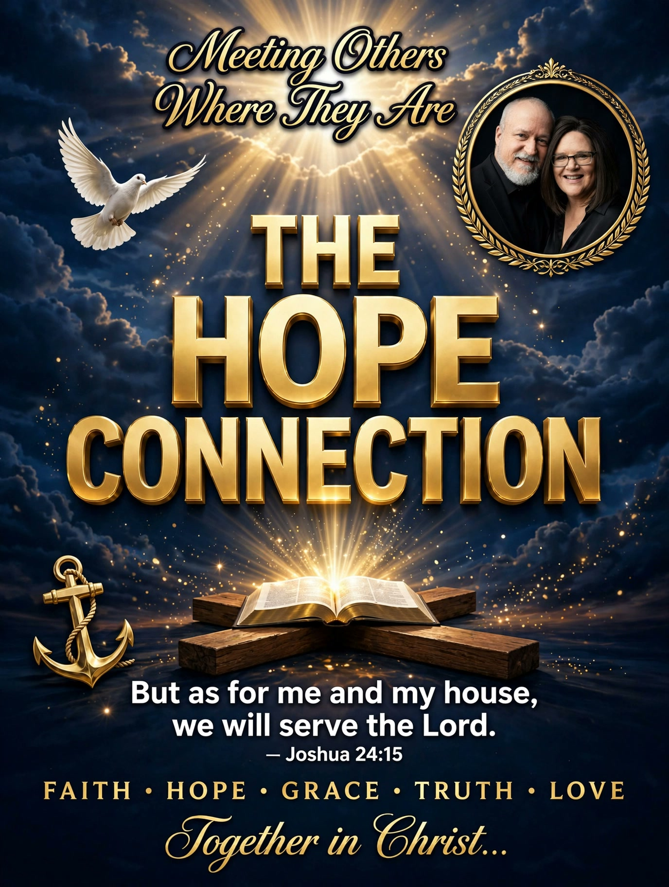

Short words for weary people — from my story, my walk, and the Word that carried me. — Lewis
Why We Exist
Our motto: "Meeting others where they are in the Name of Jesus."
Our mission: to make Jesus famous — not us.
Our purpose: The Hope Connection is a place of no judgement and real hope, wherever you are in life. Whether you are weary, wandering or wondering, or you are looking for honest encouragement, this is the place to be. You will be met with grace and truth in the Name of Jesus. Come as you are — and Lord willing, leave anchored.
In Lewis's Words
Things I say because God proved them true in my life.
"Surrender isn't giving up. It's giving over."
— Lewis Fuller · Luke 22:42
"To make Jesus famous, not to make me famous."
— Lewis Fuller
"I tell my story when I can, where I can, to anyone I can."
— Lewis Fuller
"If you're holding on by a thread, you're in the right place."
— Lewis Fuller
"Come as you are — and Lord willing, leave anchored."
— Lewis Fuller
"Glory to God, He has put a new song in my heart."
— Lewis Fuller · Psalm 40:3
"Your life is not a mistake; it is part of God's sovereign purpose and is held in His hands."
— Lewis Fuller · Jeremiah 29:11
Pastoral Insights
Short shepherd-heart readings from the teachings — each one opens the door to the full piece.
The Engine Under the Fight
Killing sin is not willpower. Paul gives the engine in one verse: "If by the Spirit you put to death the deeds of the body, you will live" (Romans 8:13). Not by the will. Not by the resolution. By the Spirit. You are not killing sin to stay His — you are killing sin because you are His, and He has not left you to do it alone.
More Than You Can Handle
The saying "God won't give you more than you can handle" is not in the Bible. Paul said he was burdened beyond his strength — and learned that the breaking point is where a man stops relying on himself and starts relying on God, who raises the dead (2 Corinthians 1:8–10).
Tear Up the Treaty
Making peace with sin rarely looks like rebellion. It looks like renaming it, shrinking it, or keeping the door unlocked — just in case. The way back is not a bigger promise. It is an honest name, an open Bible, and a Savior who receives returning sinners.
The Seasons of a Life With God
God wrote the seasons into His people's year on purpose — sowing and harvest, feasts and quiet months. The quiet months are not empty. They are where roots grow. Walk through the year the way Scripture walks through it.
Christ Proclaimed. Jesus is Lord.